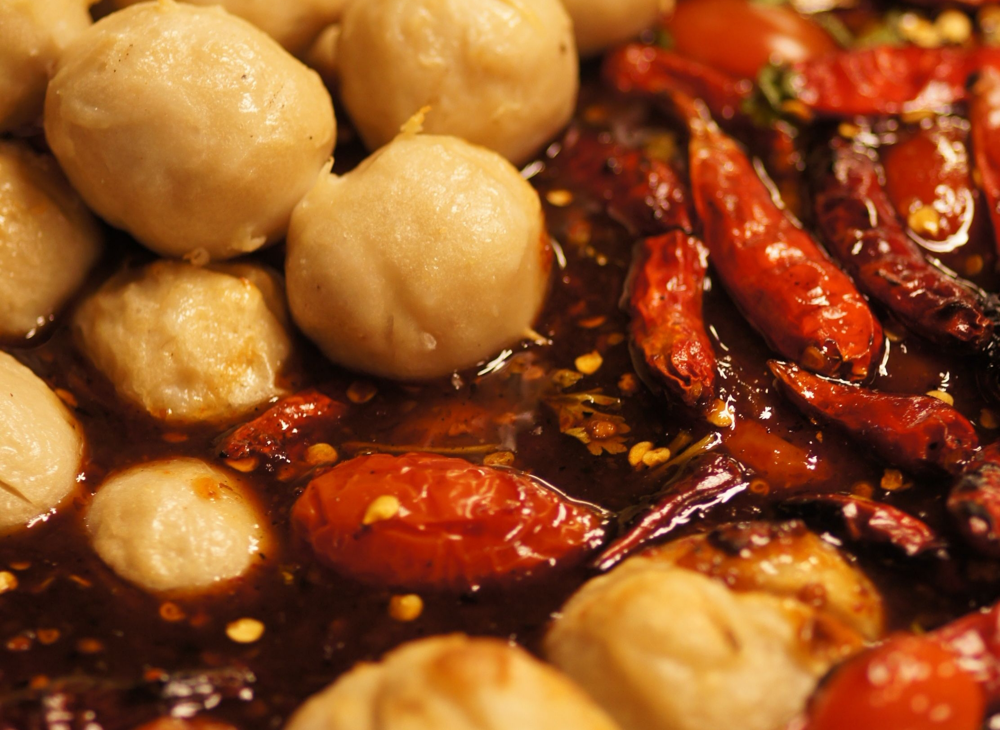
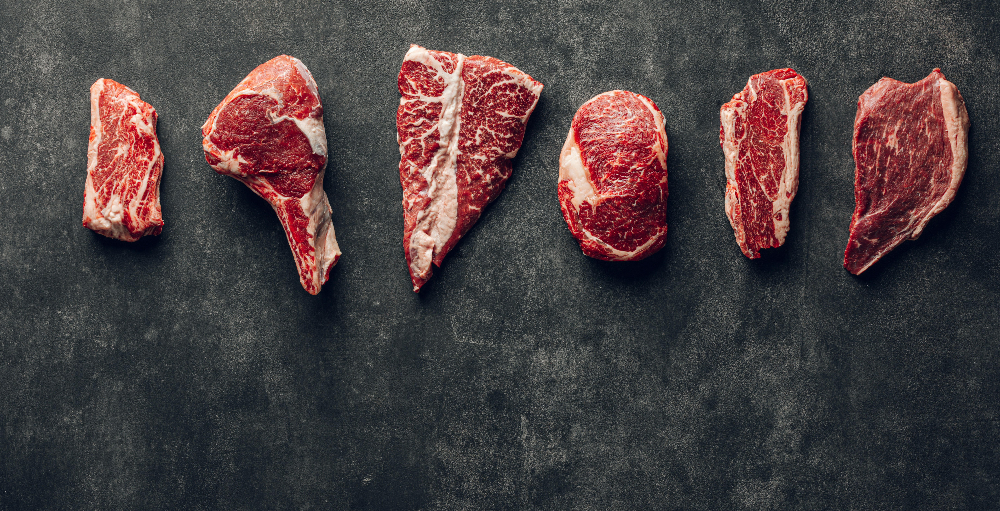

From the most humble begins, we emerged with great experience and now we serve not just one community but all the communities in Emalahleni. From big to small, rural, suburb, we are there to serve.
We first started in 2024 as a small kasi(township) business, looking to make a little side profit. In 2025, we started getting into the cafe industry, targeting small food establishments around emalahleni. Now in 2026, we took the initiative to get into retail, such as Meat & Fish, OK Foods, Family Pick and Pay, Porto foods. Long life was also another value we have added in our chilli, with a shelf life of 4 months

With just a low income flow and a heart filled with hope, we managed to build what we have today. With every pot we cook is a prayer to us. Hence we pour our hearts into every stir, making sure that each an every spoon is blessed.